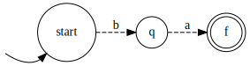
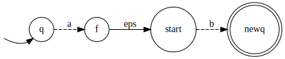
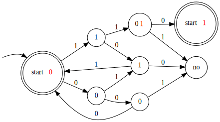

Достаточно доказать, что \(\forall n\in\N \ \ \exists w\in P: |w| \geq n \ \ \forall x,y,z:\begin{cases} w=xyz \\ y\not=\varepsilon \\ |xy| \leq n \end{cases} \exists k : xy^kz\not\in P\)
\[] a,b\in \Sigma, w:=a^n b a^n, |w|=2n+1, y=a^i, x=a^j, i>0, j\geq 0\]
\[] k=2 \quad y^2=a^{2i} \quad xy^2z=a^ja^{2i} a^{n-i-j} b a^n=a^{n+i}ba^n\] \(a^{n+i}ba^n\) - не палиндром \(\forall i>0\).
Если алфавит унарный, то язык палиндромов - язык всех слов над этим языком \(=a^*\) - регулярен.
\[] a,b\in\Sigma, w:=ba^{n-1}ba^{n-1}, |w|=2n\]
\(] k=2 \quad y^2=ba^iba^i \quad xy^2z=ba^iba^ia^{n-i-1}ba^{n-1}=ba^iba^{n-1}ba^{n-1}\not\in L\)
\(] k=2 \quad y^2=a^{2i}, xy^2z=ba^ja^{2i}a^{n-1-i-j}ba^{n-1}=ba^{n-1+i}ba^{n-1}\not\in L\)
Если алфавит унарный, то язык тандемных повторов - язык всех слов над этим языком \(=a^*\) - регулярен.
\[|w|=n+m, y=0^i, x=0^j, z=0^{n-i-j}1^m, i>0, j\geq 0, i+j\leq n\]
\[] k = m+1, y^{m+1}=0^{(m+1)i}, xy^{m+1}z=0^j0^{(m+1)i}0^{n-i-j}1^m=0^{n+mi}1^m, i>0 \Rightarrow 0^{n+mi}1^m\not\in L\]
\[w=0^{n!}1^{2n!}, y=0^i, x=0^j, z=0^{n!-i-j}1^{2n!}, i>0, j\geq 0, i+j\leq n\]
\[] k = \frac{n!}{i}+1, y^k=0^{i(\frac{n!}{i}+1)}=0^{n!+i}, xy^kz=0^j0^{n!+i}0^{n!-i-j}1^{2n!}=0^{2n!}1^{2n!} \not\in L\]
\[x=0^j, y=0^i, i>0, j\geq0\] \[]k=2, xy^2z=0^j0^{2i}0^{n^2-j-i}=0^{n^2+i} \quad n^2+i\leq n^2+n < n^2+2n+1=(n+1)^2=\text{следующий квадрат}\]
\[x=0^j, y=0^i, i>0, j\geq0\] \[] k = p+1, xy^{p+1}z=0^{(p+1)i}0^{p-i}=0^{p+pi} \quad p+pi\text{ не простое}\]
Докажем по лемме о разрастании в общем виде. Хотим доказать, что \(\forall n\in\N \ \ \exists uwv\in P : |w|\geq n \ \ \forall x,y,z:\begin{cases} w=xyz \\ y\not=\varepsilon \\ |xy| \leq n \end{cases} \exists k : uxy^kzv\not\in P\)
Нам дали \(n\). Тогда \(\exists m_k\to\infty : p=\underbrace{\ldots\ldots\ldots}_{m_k \text{ в двоичной}}\underbrace{0\ldots0}_{n}1\) - простое по теореме Дирихле, т.к. \(p=2^{n+1}m_k+1\) и НОД\((2^{n+1}, 1)=1\). Возьмём произвольное \(m\in \{m_k\}\).
\[w:=0^n, u = \underbrace{\ldots\ldots\ldots}_{m \text{ в двоичной}}, v = 1\] \[x=0^j, y=0^i, i>0, j\geq 0, z=0^{n-i-j}\] \[q:=uxy^kzw=\underbrace{\ldots\ldots\ldots}_{m \text{ в двоичной}}\underbrace{00\ldots00}_{n+(k-1)i}1=2^{n+(k-1)i+1}m+1=2^{(k-1)i}2^{n+1}m+1=(p-1)2^{(k-1)i}+1\] \[q=p2^{(k-1)i}+1-2^{(k-1)i}\] По малой теореме Ферма \(2^p\equiv 2\pmod p \Rightarrow 2^{p-1}\equiv 1\pmod p\) \[1 \equiv 2^{p-1}\equiv 2^{2(p-1)}\equiv 2^{i(p-1)} \pmod p\] \[0 \equiv 2^{i(p-1)}-1 \pmod p \Rightarrow 2^{i(p-1)}-1 \mid p\] \(2^{i(p-1)}-1\) делится на \(p \Rightarrow p\) не простое, если \(p\not=2^{i(p-1)}-1\). Корни \(p=3, p\approx-0.69^{\quad \tiny nice}\)
Т.к. \(\exist\) сколь угодно большой \(m\), не будем брать такой, что \(p=3\). \[k:=p \Rightarrow 1-2^{i(p-1)} \mid p \Rightarrow (p2^{(k-1)i}+1-2^{(k-1)i}) \mid p \Rightarrow q\not\in P\]
Рассмотрим множество \(S=\{0^n\ |\ n \text{ простое}\}\). Все элементы этого множества лежат в разных классах эквивалентности Майхилла—Нероуда по \(L\), т.к. для \(x=0^n, y=0^m\) есть различающий суффикс \(z=0^n, xz\not\in L, yz\in L\). Но \(S\) бесконечное \(\Rightarrow\) бесконечное число классов Майхилла—Нероуда \(\Rightarrow L\) не регулярный.
Нерк.
Заметим, что регулярность языка \(\Leftrightarrow\) его распознаваемости НКА \(\stackrel{\text{Томпсон}}\Leftrightarrow\) распознаваемости ДКА. Построим ДКА для \(\min L\) по ДКА для \(L\).
Создадим терминальное состояние \(q_{-1}\not\in\mathcal F\), такое что: \(\forall q\in \mathcal F, s\in\Sigma \ \ \delta(q, s)=q_{-1}, \delta(q_{-1}, s)=q_{-1}\). Все остальные переходы не трогаем. Этот ДКА распознает \(\min L\).
\[w\in\max L \Leftrightarrow \begin{cases} w\in L \\ \not\exists v\not=\varepsilon : wv\in L \end{cases}\]
Сделаем непринимающими все состояния \(q\in \mathcal F\) такие, что \(q\rightsquigarrow \overline q\in \mathcal F\), получим искомый ДКА.
\[w\in\text{pref}\,L \Leftrightarrow \exists v : wv\in L\]
Сделаем принимающими все состояния \(q\) такие, что \(q\rightsquigarrow \overline q\in \mathcal F\), получим искомый ДКА.
Из 132 мы знаем, что \(\text{pref}\,L\) регулярный. Тогда докажем, что если \(L\) регулярный, то \(\text{reverse}\,L\) регулярный. Возьмём ДКА для \(L\), поменяем направления всех ребер и заменим принимающие состояния на входные, входное состояние на принимающее. Получился НКА, принимающий \(\text{reverse}\,L \Rightarrow \text{reverse}\,L\) регулярный
\[\text{suf}\,L=\text{reverse}\,(\text{pref}\,(\text{reverse}\,L))\]
\[\mathfrak R:\Sigma^*\times \Sigma^*\to \Sigma^*, (a,b)\mapsto a\] \[\mathfrak S:\Sigma^*\times \Sigma^*\to \Sigma^*, (a,b)\mapsto b\] Это гомоморфизмы. \[\mathfrak R^{-1}(R)=\{(r, w)\ |\ r\in R, w\in \Sigma^*\}\] \[\mathfrak S^{-1}(S)=\{(w, s)\ |\ s\in S, w\in \Sigma^*\}\] Т.к. множество регулярных языков замкнуто по обратным гомоморфизмам, \(\mathfrak R^{-1}(R)\) и \(\mathfrak S^{-1}(S)\) регулярны \[\mathfrak R^{-1}(R) \cap \mathfrak S^{-1}(S)=\{(r, s)\ |\ r\in R, s\in S\}\] Этот язык регулярен по замкнутости регулярных языков по пересечению. \[\mathfrak P:\Sigma^*\times \Sigma^*\to \Sigma^*, (a,b)\mapsto a_1b_1a_2b_2\ldots\] \[\mathfrak P(\mathfrak R^{-1}(R) \cap \mathfrak S^{-1}(S))=\text{alt}(R, S)\] Этот язык регулярен по замкнутости регулярных языков по гомоморфизму.
Создадим НКА, в котором каждое состояние - пара состояний из \(A'\) из \(B'\). На каждом шаге мы недетерминированно продвигаемся либо по \(A'\), либо по \(B'\). Состояние является принимающим, если оба его порождающих состояния - принимающие.
Идея: иметь автомат для каждого возможного сдвига. Это невозможно, зато можно иметь автомат для каждого состояния. Тогда если \(ab\in\text{cycle}\,L, ba\in L\), то в ДКА для \(L\) (\(A\)) по слову \(b\) приходим в некоторую вершину \(q\), откуда по \(a\) приходим в \(f\in\mathcal F\):

У нас сначала приходит \(a\), потом \(b\), поэтому просто начнем с \(q\):

Для каждого состояния \(q\in Q\) создадим такой “свдинутый” автомат, “or” от всех автоматов - искомый.
Meet-in-the-middle по \(a\) с начального состояния и недетерминированно идем со всех принимающих состояний назад.
Построим ДКА

Для переноса 1 аналогичная штука.
Докажем регулярность \(\{z_0 y_0 x_0 z_1 y_1 x_1 \dots z_{n-1} y_{n-1} x_{n-1} \mid x_i, y_i, z_i \in \{0, 1\}\}\), тогда искомый язык \(=L^R\).
Т.к. \(Z-Y=X\), ДКА аналогичный 138, но для вычитания решает эту задачу.
Докажем, что классов эквивалентности бесконечно.
\[s_n:=111(110)^{n-1}\] \[s_n\leftrightarrow X=1^n, Y=1^n, Z=10^{n-1}\] \[X\times Y=\left(\sum_{i=0}^{n-1}2^i\right)^2=(2^n-1)^2=2^{2n}-2^{n+1}+1 \leftrightarrow \underbrace{1\ldots1}_{n}\underbrace{0\ldots0}_{n}1\leftrightarrow 10^n1^n\] \[s_n(000)(001)^{n+1}\in L \quad \forall m>n \quad s_n(000)(001)^{m+1}\not\in L\] Докажем, что \(\forall m\not=n \quad s_m\not\equiv_L s_n\) \[] m < n \quad s_m(000)(001)^{n+1}\not\in L, s_n(000)(001)^{n+1}\in L\] \(\forall s_n, s_m\in S\) - бесконечного \(s_n\not\equiv_L s_m \Rightarrow\) число классов эквивалентности бесконечно \(\Rightarrow \not\exists\) ДКА.
Запустим \(\tiny \sout{гуся}\) алгоритм Мура. Он строит классы \(k\)-эквивалентности, т.е. множества вершин, различимых строкой длины \(\le k\). Если при переходе \(k\to k+1\) классы не изменились, то алгоритм заканчивает работу, поэтому шагов \(\le n-1\). Так как алгоритм верный, то и разбиение на классы эквивалентности верно, поэтому различимость строкой длины \(\le i\), где \(i\) - число шагов алгоритма \(\Leftrightarrow\) различимости произвольной строкой.